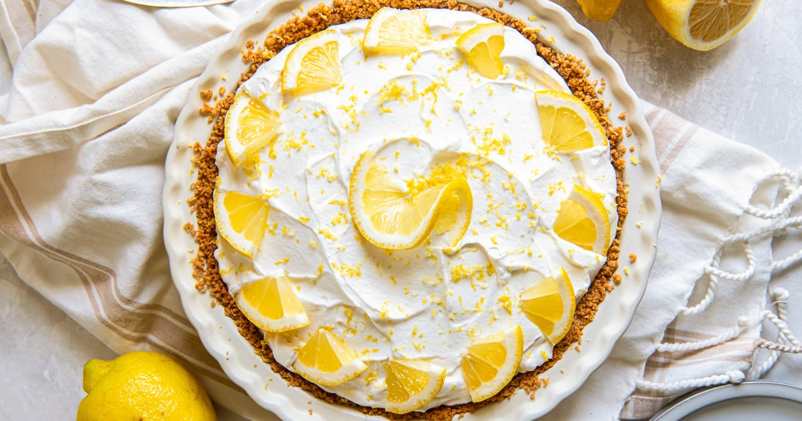

Lemon Icebox Pie

Description
Tart, creamy and sweet, lemon icebox pie is a chilled dessert that can be made ahead of time. It's perfect for summer!
Ingredients
Graham Cracker Crust
- 1 ½ cups graham cracker crumbs, (about 12 sheets)
- 6 Tablespoons (85 g) unsalted butter, melted
- ¼ cup (50 g) granulated sugar
Pie Filling
- 1 cup (226 g or 8 oz.) block-style cream cheese, room temperature
- One 14 oz. can sweetened condensed milk
- ½ cup (120 ml) fresh lemon juice, (no bottled)
- 2 Tablespoons lemon zest
- Whipped cream for garnish
Steps
Crust
- Preheat oven to 375℉.
- In a bowl, combine graham cracker crumbs, melted butter and sugar until mixed and moist. If using whole graham cracker sheets, you can put all the ingredients in a food processor to combine.
- Transfer mixture to a 9-inch pie plate. Firmly press into the bottom and up the sides of the pie plate. Bake at 375℉ for 10 minutes or until fragrant and golden. Cool completely.
Filling
- In the bowl of a stand mixer (or using a hand mixer), beat cream cheese on medium-high speed until smooth and creamy. Add sweetened condensed milk, lemon juice and zest. Mix again until smooth. Scrape down the sides and bottom of the bowl as necessary.
- Pour the filling into the cooled graham cracker pie crust. Use an offset spatula to spread into an even layer. Chill in the refrigerator for at least 4 hours or until set.
- Top with whipped cream, garnish with lemon zest and serve cold.